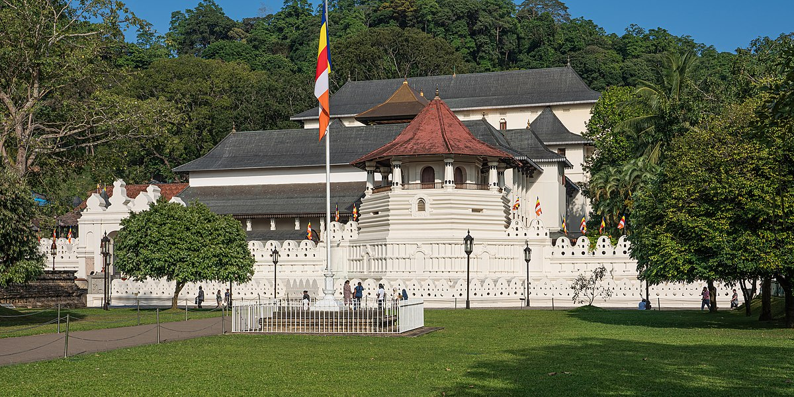

The Best Places to Travel in Central Province...
Temple of the Tooth
|  |
Temple of the Sacred Tooth Relic or Sri Dalada Maligawa often referred to as ශ්රී දළදා මාළිගාව (Glorious Tooth Temple), it is a glorious temple. Buddhist temple in Kandy, Sri Lanka. It is located in the royal palace of the former kingdom of Kandy, where he lives the remains of the Buddha's tooth. From ancient times the remnant has played a vital role in local politics because of this he believed that anyone holding the reins was in control of the world power. The relic was ruled by Sinhalese kings historically. The Dental Temple is a world heritage site mainly because of the temple and the remains. The Bhikkhus of two particular chapters, the Malwathu chapters and the Asgiri chapters conduct daily worship in the inner room. of the temple. Rituals are performed three times a day: morning, noon and evening. On Wednesday, something figurative relic bath with herbal remedy made from fragrant water and fragrant flowers called Nanumura Mangallaya; sacred water is believed to contain healing properties and is distributed to those present. The temple was last damaged by Janatha Vimukthi Peramuna's bombing in 1989, and the Tamil Eelam Liberation Tigers in 1998. However, it was restored in full each time.
Knuckles Mountain Range
 |
The Knuckles Mountain Range is located in the heart of Sri Lanka, in the Matale and Kandy regions. Width takes their name from a a series of folded layers and peaks on the west side of the massif resembling the folds of a folded fist when viewed. from parts of the Kandy region. Although the name was given to the first English explorers, the Sinhalese The locals used to call the area Dumbara Kanduvetiya which means a mountainous mountain with a mist. The mountain top is usually covered with thick layers of clouds. In addition to its aesthetic value, the range is very good interest in science. It is the microcosm of the whole of Sri Lanka as the atmosphere of all the climates in the world. the world is showcased in abundance. In the highlands there is a series of solitary, cloud-covered forests plants and animals. Although the range accounts for about 0.03% of the island's total area, it is home to a remarkable area the upper part of the world's biodiversity. The distinguished Knuckles range consists of several harbors, only plants and animals found separate from the central massif. More than 34 percent of Sri Lankan trees, shrubs, and herbs are found only in these forests. Fist Care The forest was included in the UNESCO World Heritage List in 2010 as part of the Sri Lankan Central Mountains.
Sigiriya Rock
Sigiriya or Sinhagiri (Lion Rock Sinhala: සීගිරිය, Tamil: சிகிரியா / சிங்ககிரி, also known as gi-ri-yə) is an ancient rock fortress located north of the Matale Region near the town of Dambulla, in Central Province, Sri Lanka. It is a place of historical significance and archeology controlled by a large stone column about 180 feet (590 ft) high. According to the ancient history of Sri Lanka Culavamsa, this area was a vast forest, and after the storms and landslides it became a hill and was chosen by King Kashyapa (477 - 495 AD) with his new capital. He built his palace on the rock and adorned its sides with colorful carvings. On a small plateau almost in the middle of the side of the rock he built a gate in the form of a big lion. The name of the place is derived from this building - Sīnhāgiri, Lion Rock (etymology similar to Sinhapura, Sanskrit name of Singapore, Lion City). The capital and royal palace were abandoned after the death of the king. It was used as a Buddhist monastery until the 14th century. Sigiriya today is on the UNESCO World Heritage List. It is one of the most well-preserved examples of ancient city planning.
Horton Plains National Park
Horton Plains National Park (Sinhala: also includes montane grassland and cloud forest. 6 (3.7 mi) from the world-famous Ohiya Gap / Dondra Watch and 32 kilometers (20 mi) from Nuwara Eliya. Horton Plains is the source of three of Sri Lanka's three major rivers, the Mahaweli, Kelani, and Walawe. In Sinhala the plains are known as the Maha Eliya Plains (මහ එළිය තැන්න). Stone tools from the Balangoda tradition are found here. Wild vegetation is a grassy area covered by mountain forest and includes many endemic plants. The large herds of Sri Lankan Sambar deer thrive as common mammals and the park is also an important bird sanctuary with many species not only found in Sri Lanka but also restricted to the Horton Plains. Forest dieback is one of the major threats to the park and some studies suggest that it is caused by a natural event. The World's End and Baker's Falls are among the tourist attractions in the park. In the 20th century there are records of elephants and in the park.